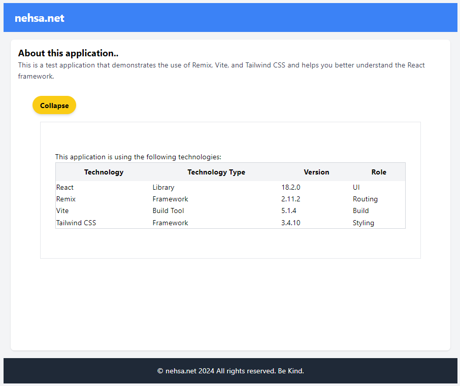
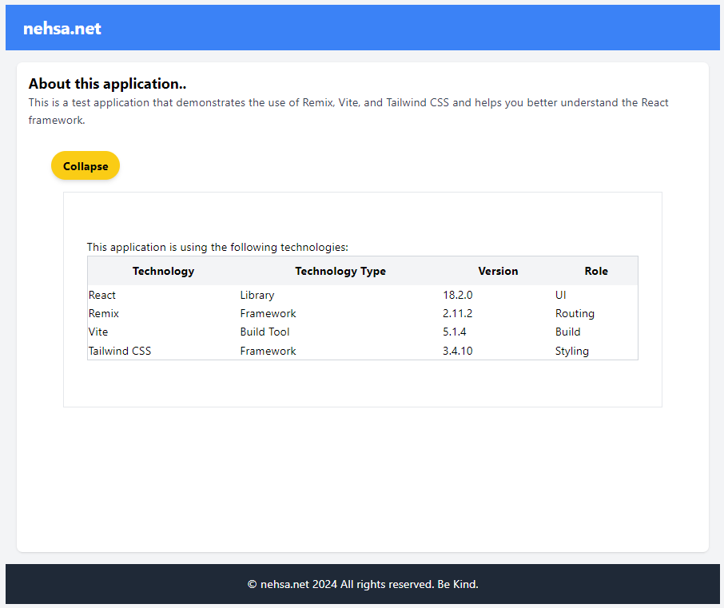

Tailwind CSS is a utility-first CSS framework for rapidly building custom designs.
Tailwind CSS is a CSS framework, similar to
Bootstrap, but with a different approach. Whereas Bootstrap places emphasis on pre-built components,
Tailwind CSS focuses on utility classes. This means that Tailwind CSS is more flexible and customizable
than Bootstrap, but it also requires more work to create a cohesive design. It is a powerful tool that
can help you create unique and
responsive designs quickly.
This is the test app I created and the Tailwind CSS I used to create this:

Common Features
<className="h-full">
Gives the div a height of 100%
className="m-8"
Styles the div with a margin of 8. The 8 is a shorthand for 2rem.
m-1: 0.25rem
m-2: 0.5rem
m-3: 0.75rem
m-4: 1rem
m-5: 1.25rem
m-6: 1.5rem
m-7: 1.75rem
m-8: 2rem
m-9: 2.25rem
m-10: 2.5rem
m-11: 2.75rem
m-12: 3rem
className="border border-gray-200"
Styles the div with a border and a gray of shade 200 out of 900 border
className="text-2xl font-bold"
Styles the text with a font size of 2xl and bold font. The 2xl is a shorthand for
1.5rem.
2xl: 1.5rem
3xl: 1.875rem
4xl: 2.25rem
5xl: 3rem
6xl: 4rem
className="hover:bg-yellow-100"
Styles the div with a hover effect of a yellow background
Styles the div with a width of full, a table layout, auto sizing, a border collapse,
a
border of 2, a gray of shade 300 out of 900 border, and rounded corners
Comparison of CSS Frameworks
CSS Framework
Pros
Cons
License
Maturity
Bootstrap
Pre-built components, easy to use
Less flexible, can be bloated
MIT
10 years
Material
Google design language, easy to use
Less flexible
Apache 2.0
6 years
Tailwind CSS
Utility classes, highly customizable
Requires more work, can be verbose
MIT
3 years
Bulma
Modern design, easy to use
Less flexible, fewer components
MIT
5 years
Install Tailwind CSS and PostCSS
npm install tailwindcss
postcss autoprefixer - Install the necessary packages
npx tailwindcss init -p - Create the
configuration
file which allows us to configures such things as the color palette and
the
spacing scale
Edit the tailwind.config.js file to add the colors and spacing scale
This is the test app I created and the Tailwind CSS I used to create this: 
module.exports = { mode: 'jit', purge: ['./app/**/*.jsx'], darkMode: false, // or 'media' or 'class' theme: { extend: { colors: { 'nehsa-blue': '#1e3a8a', 'nehsa-green': '#00ff00', 'nehsa-red': '#ff0000', 'nehsa-yellow': '#ffff00', 'nehsa-orange': '#ff6600', 'nehsa-purple': '#6600cc', 'nehsa-pink': '#ff00ff', 'nehsa-brown': '#663300', 'nehsa-gray': '#666666', 'nehsa-black': '#000000', 'nehsa-white': '#ffffff', }, spacing: { '1': '0.25rem', '2': '0.5rem', '3': '0.75rem', '4': '1rem', '5': '1.25rem', '6': '1.5rem', '7': '1.75rem', '8': '2rem', '9': '2.25rem', '10': '2.5rem', '11': '2.75rem', '12': '3rem', '14': '3.5rem', '16': '4rem', '20': '5rem', '24': '6rem', '28': '7rem', '32': '8rem', } } }module.exports = { plugins: [ require('tailwindcss'), require('autoprefixer'), ], }module.exports = { mode: 'jit', purge: ['./app/**/*.jsx'], darkMode: false, // or 'media' or 'class' theme: { extend: { colors: { 'nehsa-blue': '#1e3a8a', 'nehsa-green': '#00ff00', 'nehsa-red': '#ff0000', 'nehsa-yellow': '#ffff00', 'nehsa-orange': '#ff6600', 'nehsa-purple': '#6600cc', 'nehsa-pink': '#ff00ff', 'nehsa-brown': '#663300', 'nehsa-gray': '#666666', 'nehsa-black': '#000000', 'nehsa-white': '#ffffff', }, spacing: { '1': '0.25rem', '2': '0.5rem', '3': '0.75rem', '4': '1rem', '5': '1.25rem', '6': '1.5rem', '7': '1.75rem', '8': '2rem', '9': '2.25rem', '10': '2.5rem', '11': '2.75rem', '12': '3rem', '14': '3.5rem', '16': '4rem', '20': '5rem', '24': '6rem', '28': '7rem', '32': '8rem', } } }module.exports = { plugins: [ require('tailwindcss'), require('autoprefixer'), ], }